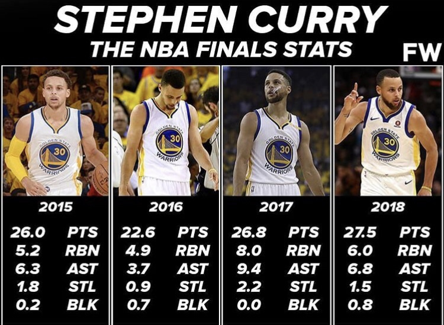
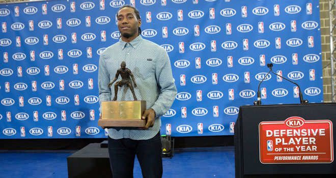

NBA: acerca del baloncesto
Estadísticas

La NBA lleva un registro de estadísticas con respecto a cada jugador en cada partido, dichas estadísticas incluyen, porcentajes de tiro, puntos anotados por partido jugado, así mismo rebotes, asistencias, faltas, robos y tapones por partido, más-menos cuando se está en cancha entre muchas otras. Es una tarea díficil pero estas estadísticas usualmente sirven para otorgar el premio de MVP de la temporada regular
Partidos
Los partidos de la NBA son de 4 cuartos de 12 minutos cada uno, con tiempos entre cada cuarto y uno más largo despues del segundo cuarto que es el medio tiempo, en caso de llegarse a dar un empate al final del último cuarto, se realiza una prorroga de 5 minutos. Dichos partidos se dividen en 82 en la temporada regular donde cada equipo busca obtener el mejor record de victorias/derrotas posible, y los mejores 8 clasificados de cada conferencia (este y oeste) avanzan a los playoffs donde se enfrentan en series al mejor de 7 en un torneo de eliminación directa siempre divididos en conferencias, el ganador de cada conferencia avanza a la gran final, donde se decide quien será el campeón de la NBA.
Premios a jugadores

Se realiza una premiación cada año cuando termina la temporada regular, con respecto al trabajo hecho por algunos jugadores, tanto en el área defensiva como ofensiva. Estos premios son basados en las estadísticas que recolectan los analistas y especialistas, votos de todos los entrenadores, votos de la comunidad, balance victorias/derrotas del equipo, etc. El premio más importante es el mvp, el jugador más valioso de la temporada, es decir el mejor jugador, también está el jugador defensivo del año, el jugador más mejorado, etc.